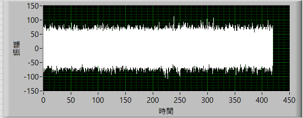
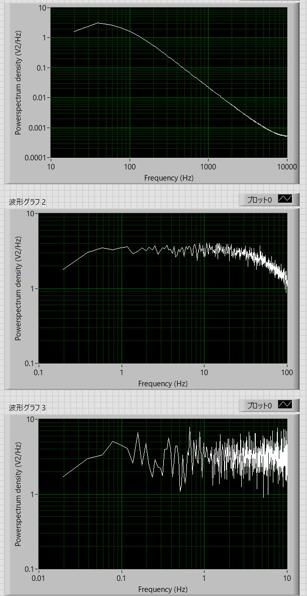
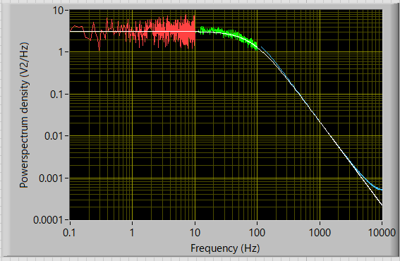

パワースペクトルの実際の作業内容-12
トラップされたビーズのブラウン運動の場合
トラップされたビーズのブラウン運動の場合は，ここで説明したように，メトロポリス法を用います．
では実際に確かめてみましょう．
元データ
トラップされたビーズのブラウン運動
実際の波形の時間 (s) ： Stime = 262.144 s
サンプル周波数 (1/s) ： Sfreq = 20,000 kHz
サンプル時間分解能 (s) ： dt = 0.00005 ms
実際の波形の数 ： n = 8388608 = 223
FFTサイズ ： 1024
とサンプル周波数（およびサンプル時間分解能）を一桁上げています．
それは，トラップされたビーズのブラウン運動の場合，当分配の法則から，
\(\Large \displaystyle \frac{1}{2} \ K <x^2> = = \frac{1}{2} \ k_B \ T \)
K ： ばね定数 (pN/nm)
<x2 > ： ゆらぎの二乗変位 (nm2)
kB ： ボルツマン定数
T ： 絶対温度
の関係にあるためで，また，ここ，にあるように，dtとdxとの関係は，拡散の式から，
\(\Large \displaystyle dt = \frac{<x^2> }{2D} \)
\(\Large \displaystyle D = \frac{k_B T}{ \gamma} \)
\(\Large \displaystyle \gamma = 6 \pi \ \eta \ r \) （球の場合）
D ： 拡散係数 (nm2/s)
η ： 粘度 (N/s)
ｒ ： 球の半径 (nm)
ので，dxは，
\(\Large \displaystyle dx = \sqrt{ <x^2> } = \sqrt{2 \times \frac{k_B T}{ 6 \pi \ \eta \ r} \times dt} \)
で決まります．
したがって，上記の条件では，
dx = 4.69 nm
となります．
さて，トラップされたビーズのブラウン運動の場合，パワースペクトルはローレンツ型となりますが，
\(\Large \displaystyle \Phi (f) = \frac{ \Phi(0)}{1 + \left( \frac{f}{f_c} \right)^2}\)
ここで，
\(\Large \displaystyle \Phi (0) = \frac{ 2 \ k_B T \ \gamma}{k^2}\)
\(\Large \displaystyle f_c = \frac{ K}{2 \pi \ \gamma}\)
です．
実際に作成してみると，

となります．
ここで，
\(\Large \displaystyle K = 0.01 pN/nm \)
としたので，
\(\Large \displaystyle <x^2> = \frac{k_B T}{K} = \frac{4.14 \times 10^{-21} Nm}{0.01 \times 10^{-3} N/m} = 414 \ nm^2 \)
と理論上計算できます．実際の波形の分散値は，
413.41 nm2
となり，一致していることがわかります．
これを，
100-10000 Hz
10-100 Hz
1-10 Hz
で分けて考えてみます．
| 加算平均 | ローパス | 間引き | df | |
| 100-1000 Hz | 8192 | - | 0 | 19.5 Hz |
| 10-100 Hz | 81 | 100 Hz | 100 | 0.195 Hz |
| 1-10 Hz | 8 | 10 Hz | 1000 | 0.0195 Hz |
このようなパラメータでローパス，間引き，加算平均を掛けてみます．

上から，
100-10000 Hz
10-100 Hz
1-10 Hz
となります．
このデータを各周波数帯で切り取り，融合させると，

という形となり，
\(\Large \displaystyle \Phi (f) = \frac{ \Phi(0)}{1 + \left( \frac{f}{f_c} \right)^2}\)
どおりのカーブとなり，
ここで，
\(\Large \displaystyle \Phi (0) = 3.121 nm^2 / Hz\)
\(\Large \displaystyle f_c = 84.43 Hz\)
の理論値とぴったりフィットします．
ちなみに，dt = 0.0005 sと10倍荒くして計算すると，ローレンツ型にはなりますが，Φ(0)，fcの値それぞれが若干くるってきます．
dx = 14.8 nm
とビーズのブラウン運動をシミュレートするには荒すぎたのですね．
最後にまとめです．